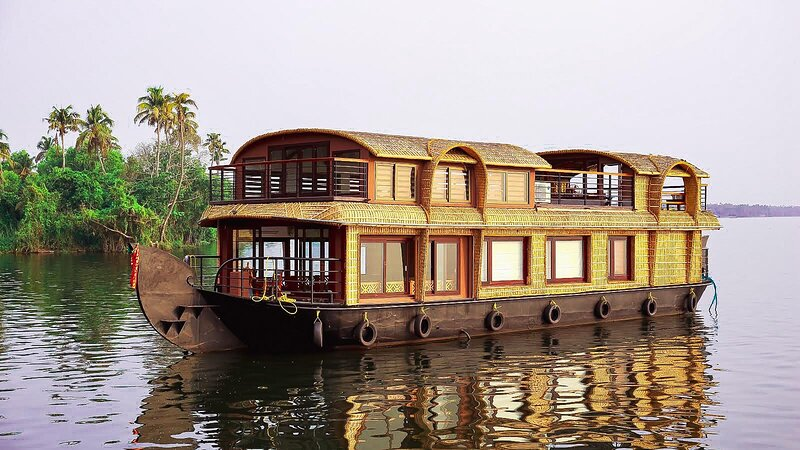

Things to do in Kerala

Houseboat cruise:
A blissful experience through the placid backwaters of Kerala… To get the details of Houseboats and pre book your cruise, do contact the concerned DTPC's or contact directly to the Accredited Houseboat operators.

Ayurveda Rejuvenation:
Energies your cells and rejuvenate your body and mind through Ayurvedic and Panchakarma treatments.
Walk through the woods:
Explore the ecotourism possibilities of Kerala developed by Kerala Forest Department with the active support and involvement of the local community.